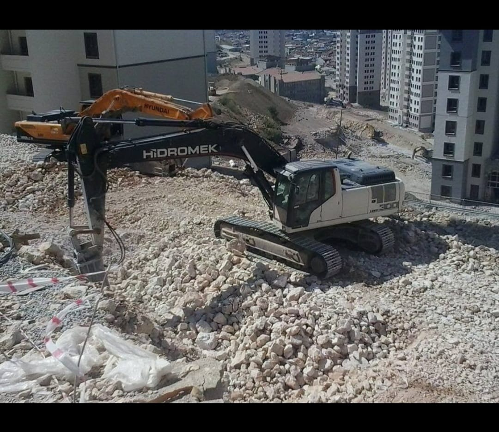
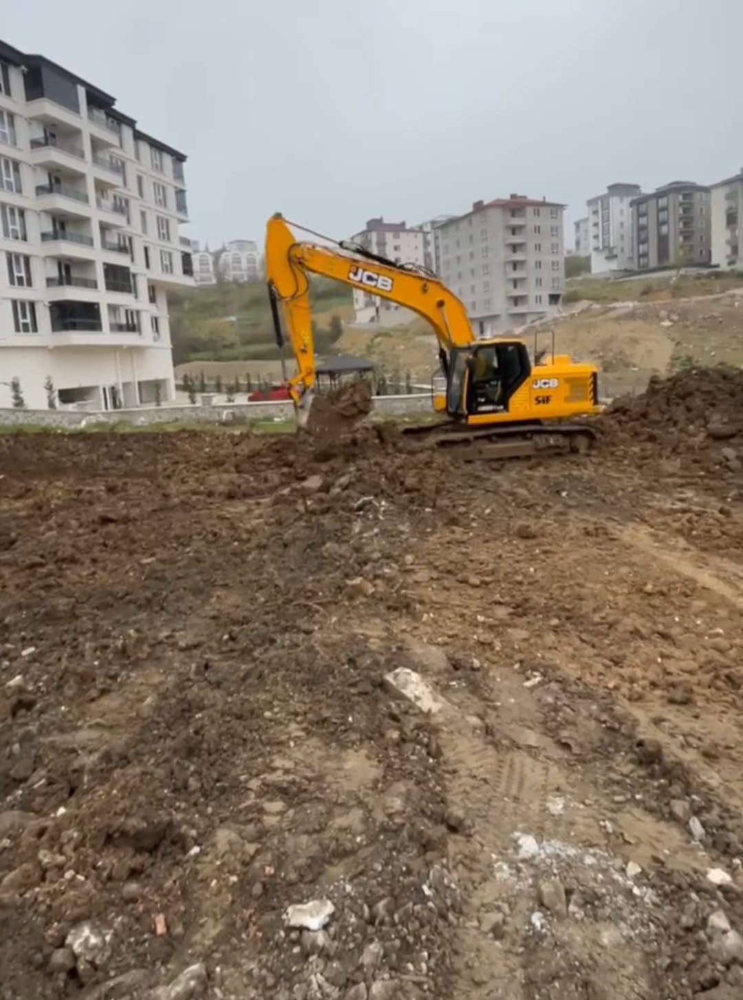

Doğru Ekskavatör Seçimi Nasıl Yapılır?
Projeniz için en uygun ekskavatör tonajını seçerken nelere dikkat etmelisiniz? Kazı derinliği, zemin yapısı ve proje büyüklüğü gibi faktörlerin önemi.
Devamını Oku
Temel Kazısında Dikkat Edilmesi Gerekenler
Bina temel kazısı yapılırken hangi kurallara dikkat edilmelidir? Zemin etüdü, kazı derinliği ve güvenlik önlemleri hakkında bilmeniz gerekenler.
Devamını Oku
Bina Yıkımında Güvenlik Önlemleri
Güvenli bina yıkımı için uyulması gereken standartlar ve yöntemler. İş güvenliği, çevre sağlığı ve yasal düzenlemeler.
Devamını Oku
Hafriyat Nedir ve Ne Zaman Gereklidir?
İnşaat projelerinde hafriyatın önemi, türleri ve profesyonel hafriyat hizmeti almanın faydaları.
Devamını Oku
Alt Yapı Kazılarında Modern Yöntemler
Su, elektrik ve kanalizasyon alt yapı kazılarında kullanılan modern teknikler ve ekipmanlar.
Devamını Oku
İş Makinelerinde Bakım ve Kontrol
Ekskavatör ve beko loderlerde düzenli bakım işlemlerinin önemi ve yapılması gerekenler.
Devamını Oku
Zemin Etüdünün Önemi
İnşaat öncesi zemin etüdü neden önemlidir? Zemin analizi ve raporlama süreci.
Devamını Oku